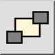
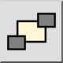

Menu: Modify > Send to Back
Shortcut: M, B
Commands: toback | mb
Toolbar / Icon:
 

Menu: Modify > Send to Back
Shortcut: M, B
Commands: toback | mb
Description:
Changes the order in which entities are displayed. Use this tool to send entities that are hiding other entities into the background.
Procedure: